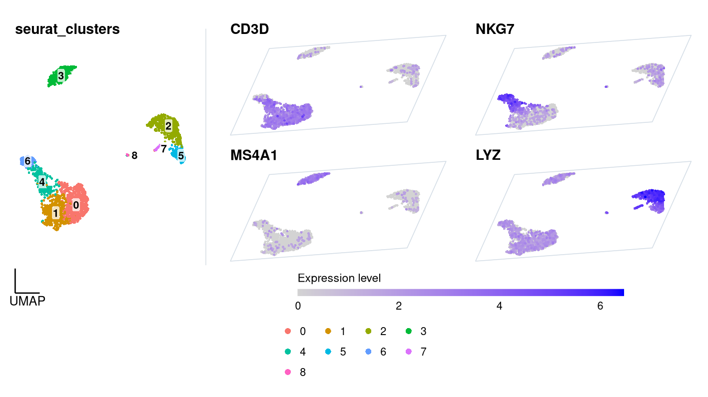
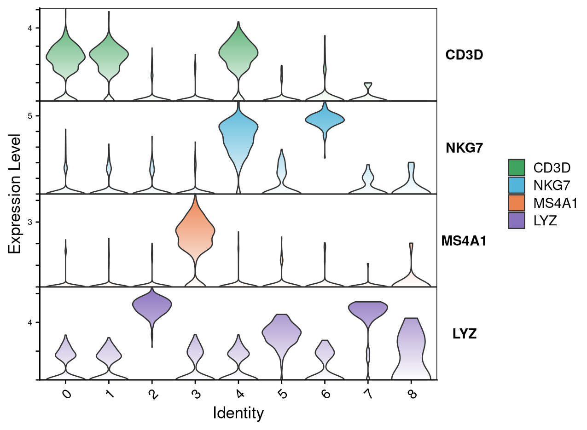
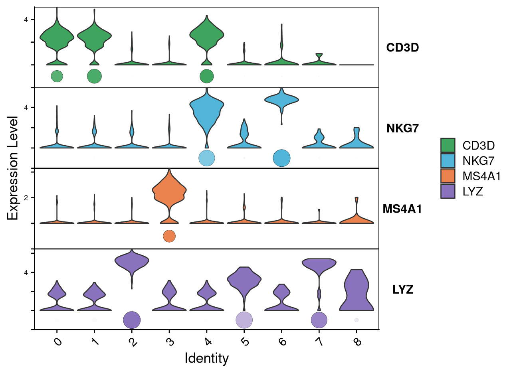

Use a single PBMC3K object to plot gene expression on UMAP or PCA and compare expression distributions across Seurat clusters.
README · Release notes · Archived v0.8.6 tutorial
Install from GitHub, then install Seurat to run the examples below.
install.packages("remotes")
remotes::install_github("RuiyingChenBioinfo/Seurcery")
install.packages("Seurat")Alternatively, to install from a downloaded source archive, run the following from the directory containing the archive. Feature layers require SeuratObject >= 5.0.0 and ggplot2 >= 3.5.0.
install.packages(c("ggplot2", "SeuratObject", "patchwork", "rlang"))
install.packages("Seurcery_0.90.tar.gz", repos = NULL, type = "source")Load the packages:
library(Seurat)
library(ggplot2)
library(Seurcery)
packageVersion("Seurcery")
# 0.90Install Satija Lab's PBMC3K dataset once. The processed pbmc3k.final
object contains 2,638 cells with nine cluster IDs (0–8) in seurat_clusters.
All examples use these IDs and the same four genes. Data from Satija Lab,
pbmc3k.SeuratData 3.1.4,
licensed under CC BY 4.0.
install.packages(
"https://seurat.nygenome.org/src/contrib/pbmc3k.SeuratData_3.1.4.tar.gz",
repos = NULL, type = "source"
)data("pbmc3k.final", package = "pbmc3k.SeuratData")
rds <- SeuratObject::UpdateSeuratObject(pbmc3k.final)
gl <- c("CD3D", "NKG7", "MS4A1", "LYZ")UpdateSeuratObject() updates this archived object for SeuratObject v5.
Warnings about command logs without an assay refer to the stored analysis
history. The RNA expression values and original cluster IDs are preserved.
The left panel shows the original cluster IDs on the UMAP. Each projected
gene panel uses the same cells and coordinates. All genes share a colorbar
for expression in the RNA assay's normalized data layer.
FeatureLayerPlot(
rds, features = gl, group.by = "seurat_clusters",
reduction = "umap", assay = "RNA"
)
Set reduction = "pca" to use the first two stored principal
components. The embedding label appears below two equal, perpendicular black lines.
FeatureLayerPlot(
rds, features = gl, group.by = "seurat_clusters",
reduction = "pca", assay = "RNA"
)Characters and factors use Seurat's default discrete colors. The left title
is the metadata column name. To customize colors, name the palette with the
category levels and pass a manual scale to group.scale.
ids <- levels(factor(rds$seurat_clusters))
pal <- setNames(grDevices::hcl.colors(length(ids), "Dark 3"), ids)
FeatureLayerPlot(
rds, gl, group.by = "seurat_clusters", reduction = "pca",
group.scale = scale_color_manual(values = pal)
)
# A fill scale updates the same reference map and legend.
FeatureLayerPlot(
rds, gl, group.by = "seurat_clusters", reduction = "pca",
group.scale = scale_fill_manual(values = pal)
)For a continuous metadata column, the reference map uses a Reds palette and
a separate colorbar. Use feature.cols to change the expression
gradient and text.color to change text colors.
order = TRUE draws higher values last so they appear above
lower values. This applies to gene expression and numeric metadata.
order = FALSE keeps the original cell order.
| Argument | Default | Meaning |
|---|---|---|
ncol | 2 | Number of gene-panel columns. |
gap.x | 0.18 | Horizontal gap; must be greater than zero. |
gap.y | 0.16 | Vertical gap; at least max(0.10, title.gap + 0.037). |
title.gap | 0.04 | Gene-title offset above its panel; at least 0.037. |
Gaps are expressed in normalized plot coordinates. Smaller values make the layout more compact. Invalid gaps cause an error before plotting, keeping the panels and their reserved title space separate.
p <- FeatureLayerPlot(
rds, gl, group.by = "seurat_clusters", reduction = "pca",
order = TRUE, gap.x = 0.06, gap.y = 0.11, title.gap = 0.04
)
ggsave("feature-layers.pdf", p, width = 180, height = 101, units = "mm")Partial missing or non-finite expression and metadata values generate warnings with counts. They are retained as missing-colored points (grey by default), without zero-filling. Zero expression is a valid observed value.
An entirely missing metadata column or requested gene produces an error,
as do non-finite embedding coordinates, a missing assay or reduction, absent
requested genes, and missing normalized data. The function does
not fall back to counts.
Embedding cells absent from the selected assay are omitted from all panels with a warning. If the embedding and assay have no shared cells, plotting stops with an error.
To generate the UMAP, PCA, manual-color, and compact examples as one PDF, run from the repository root:
Rscript examples/feature-layers.R feature-layers.pdfBoth functions add a layer to a Seurat violin plot. Use a named palette
to associate each gene with its color. With add.noise = FALSE,
zero expression remains zero when calculating the percentage of expressing cells.
gene_cols <- c(CD3D = "#3FA55E", NKG7 = "#50B5D8",
MS4A1 = "#EA8350", LYZ = "#8B72BE")
p <- VlnPlot(
rds, features = gl, group.by = "seurat_clusters", pt.size = 0,
stack = TRUE, flip = TRUE, add.noise = FALSE
) + scale_fill_manual(values = gene_cols)p + geom_vln_gradient()Each gene has its own opacity range. By default, higher values are more
opaque. Use direction = -1 to reverse the gradient or set
alpha_min and alpha_max to adjust its range.

p + geom_dot_gradient(guide = FALSE, y_axis_min = -2)Dot size shows the percentage of cells in each cluster with expression
above expr_cutoff (default 0). Opacity shows relative average
expression within a gene panel. Set guide = TRUE to display the
dot guide. Here y_axis_min = -2 leaves room below zero for the dots.

p + geom_vln_gradient() + geom_dot_gradient(guide = TRUE, y_axis_min = -2)Both addition orders and both flip settings are supported.
low_quantile, mid_quantile and high_quantile
are fractions of the expression range. For violins this is the panel's plotted
range, and for dots it is the range of the cluster means in that panel.
Rscript examples/stacked-gradients.R stacked-gradients.pdfRuiying Chen (chenruiying21@mails.ucas.ac.cn).